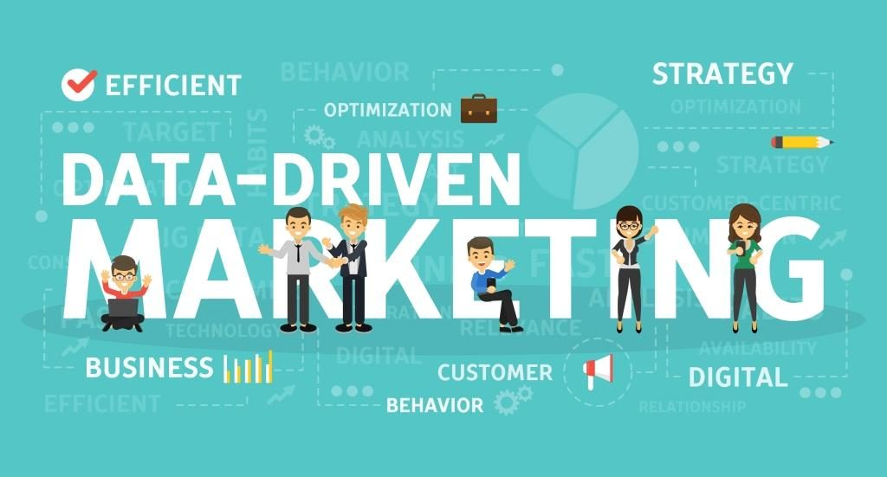

How Data-Driven Marketing Helps Improve Conversion Rates
Here's the answer to the million dollar question and what we think about it
After all, data-driven marketing can help you achieve numerous benefits for your business, ultimately leading to an increase in conversions. If your marketing initiatives are backed by data, they will have much higher success rates. And, that, in turn, will lead to an increase in conversions. There are a lot of potential sources of data that are easily accessible for most businesses. In this post, we will not only discuss where to get the data but also how to leverage it for your business success.
Data Science Explained:
Data science is a multi-disciplinary field that uses scientific methods, processes, algorithms and systems to extract knowledge and insights from structured and unstructured data. Data science is the same concept as data mining and big data: "use the most powerful hardware, the most powerful programming systems, and the most efficient algorithms to solve problems"
Even recent entrants like Uber and AirBnB are threatened by blockchain technology.
All you need to do is encode the transactional information for a car ride or an overnight stay, and again
you have a perfectly safe way that disrupts the business model of the companies which have just begun to
challenge the traditional economy.
4 Characteristics Of The Data Science Heros:
The Pillars of Data Science Expertise:
1. Business Domain
2. Statistics and Probability
3. Computer Science and Software Programming
4. Written and Verbal Communication
"In the next 10 years,Data Science and Software will do more for medicine than all of the biological sciences together"
The advent of big data is making the whole process of recycling and waste management much easier. In fact, big data has impacted many industrial and scientific realms in ways that benefit the environment. For example, it is regularly used to help scientists and land managers gain a better understanding of our changing environment and ways to combat climate change.
One way big data is making recycling more effective is through the development of a recycling robot, which makes the process of sorting solid waste much cheaper and safer. The robot works by collecting data associated with the patterns, textures, and even brand logos of the material it is sorting. As a whole, a robot can sort nearly 60 cartons of recyclables per minute!
"That makes each and every phone a bank due to DataScience."
What does Data Scientist do??
In the past decade, data scientists have become necessary assets and are present in almost all organizations. These professionals are well-rounded, data-driven individuals with high-level technical skills who are capable of building complex quantitative algorithms to organize and synthesize large amounts of information used to answer questions and drive strategy in their organization.
This is coupled with the experience in communication and leadership needed to deliver tangible results to various stakeholders across an organization or business. Data scientists need to be curious and result-oriented, with exceptional industry-specific knowledge and communication skills that allow them to explain highly technical results to their non-technical counterparts. They possess a strong quantitative background in statistics and linear algebra as well as programming knowledge with focuses in data warehousing, mining, and modeling to build and analyze algorithms.

"The World Is One Big Data Problem." - Andrew McAfee
How it evolved??
The term "data science" has appeared in various contexts over the past thirty years but did not become an established term until recently. In an early usage, it was used as a substitute for computer science by Peter Naur in 1960. Naur later introduced the term "datalogy".In 1974, Naur published Concise Survey of Computer Methods, which freely used the term data science in its survey of the contemporary data processing methods that are used in a wide range of applications.
The modern definition of "data science" was first sketched during the second Japanese-French statistics symposium organized at the University of Montpellier II (France) in 1992. The attendees acknowledged the emergence of a new discipline with a specific focus on data from various origins, dimensions, types and structures. They shaped the contour of this new science based on established concepts and principles of statistics and data analysis with the extensive use of the increasing power of computer tools.
Where can you use Data Science??
Airline Industry across the world is known to bear heavy losses. Except a few airline service providers, companies are struggling to maintain their occupancy ratio and operating profits. With high rise in air fuel prices and need to offer heavy discounts to customers has further made the situation worse. It wasn’t for long when airlines companies started using data science to identify the strategic areas of improvements. Now using data science, the airline companies can: Predict flight delay, Decide which class of airplanes to buy, Whether to directly land at the destination, or take a halt in between, Effectively drive customer loyalty programs, Southwest Airlines, Alaska Airlines are among the top companies who’ve embraced data science to bring changes in their way of working.
“The ability to take data — to be able to understand it, to process it, to extract value from it, to visualize it, to communicate it — that’s going to be a hugely important skill in the next decades.” - Hal Varian, chief economist at Google and UC Berkeley professor of information sciences, business, and economics 3
The End.